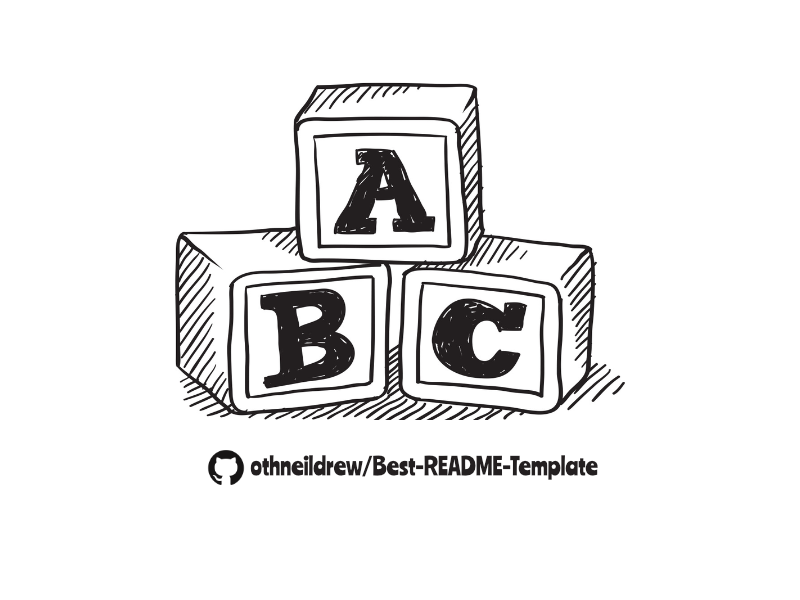

Program Builder
Create a named scan that touches every SMA outfit across every timeframe stack.
Simple Moving Average Outfit Transparency
This GitHub Pages–ready experience fuses research-grade documentation with a fully client-side analysis engine. Select one of five free data APIs (or plug in your own key), launch multi-ticker scans, and monitor how SMA outfits modulate global liquidity in real-time.

Create a named scan that touches every SMA outfit across every timeframe stack.
Every running or completed scan is listed with live logs for full transparency.
We evaluate every outfit/timeframe pair and stream the latest state below.
Use these quick links to navigate the supporting research assets.
Context for SMA outfits and their socio-technical impact.
Data governance, cleansing, and SMA computation workflow.
Precision Buying Algorithms, Automated Shorts, and more.
Full parameter catalog (1–999 periods) with historical notes.
44,000+ Twitter thread references documenting public trades.
Session-level retrospectives with compliance narratives.